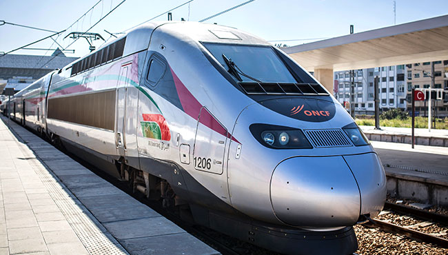
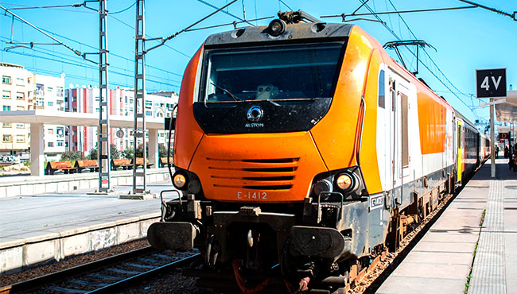
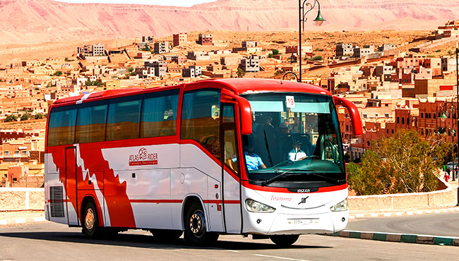
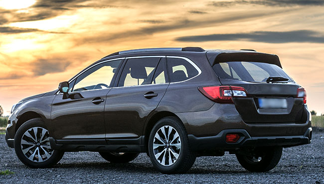
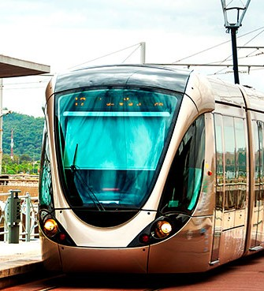
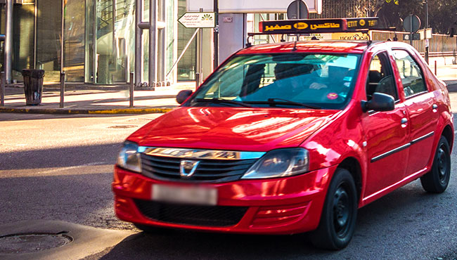
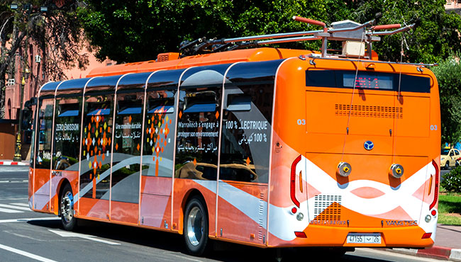
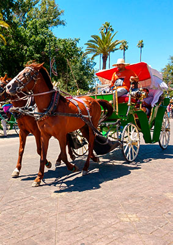
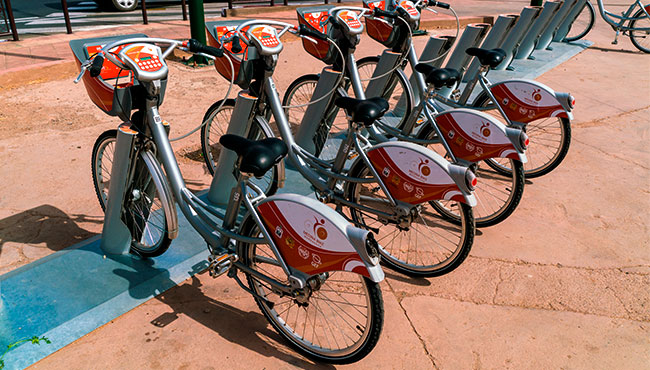
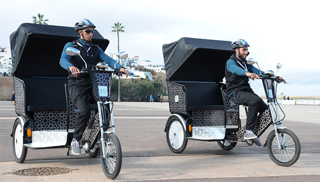

Selon la destination de votre séjour au Maroc, les moyens de transports disponibles varient d'une ville à l'autre. Prendre un taxi, un bus, le train, ou enfourcher un vélo ? Apprenez à circuler plus facilement, pour voir tous les merveilles que vous réserve le Royaume du Maroc !
A la sortie des aéroports, vous avez le choix entre des bus « navette », des taxis ou des agences de locations de voitures !
TGV |
Train |
Autocar |
Voitures de location |
En plus de pouvoir se déplacer en train conventionnel, il est possible d’emprunter le Train à Grande Vitesse (TGV) qui dessert actuellement 4 gares : Tanger, Kénitra, Rabat et Casablanca. Vous pouvez ainsi faire le trajet Tanger-Casablanca en 2h10, Rabat-Tanger en 1h20 et Kénitra-Tanger en 50 minutes seulement. Vous pouvez acheter votre billet sur place ou sur le site internet de l'ONCF.
Tramway |
Taxi |
Bus Touristique |
Intra-muros, le tramway est le moyen privilégié pour se déplacer dans les villes de Rabat, Salé et Casablanca. Deux lignes de tramway sont mises en service pour relier la ville de Salé à la ville de Rabat. Quant à Casablanca, deux lignes existent et deux autres lignes seront mises en circulation très prochainement.
Balade en calèche |
Vélos de location |
Vélos-taxis |
Pour les petites promenades, la balade en calèche vous fait expérimenter le dédale de ses ruelles qui serpentent au cœur des villes. C’est le seul moyen de se promener dans les médinas et les souks plus librement. Vous pouvez même marcher à pieds pour faire le tour de la médina. C’est aussi une occasion pour vous imprégner de l’atmosphère propre à chaque ville.